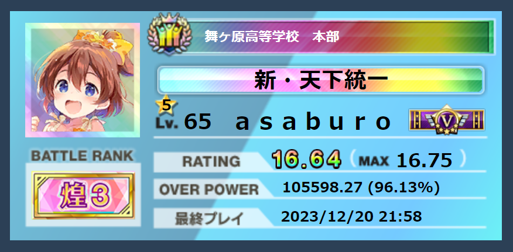
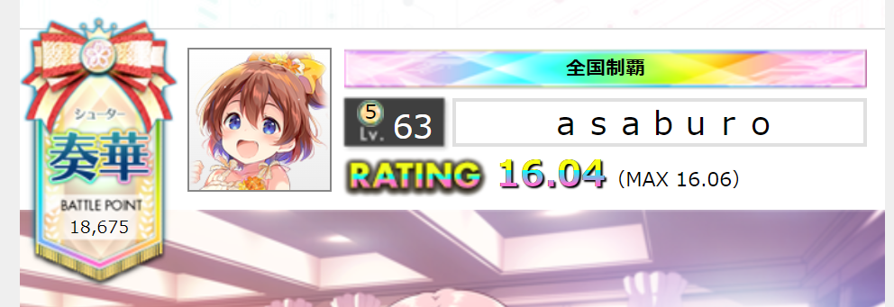
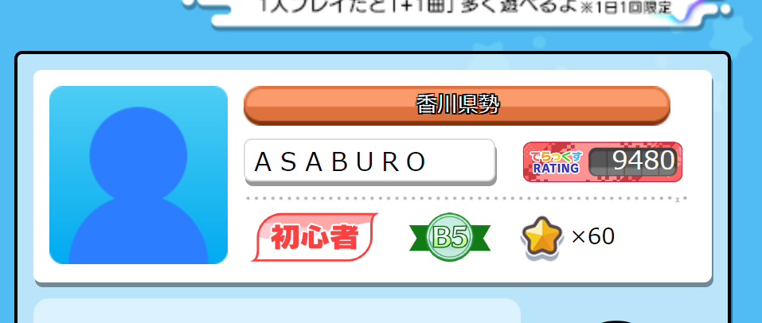
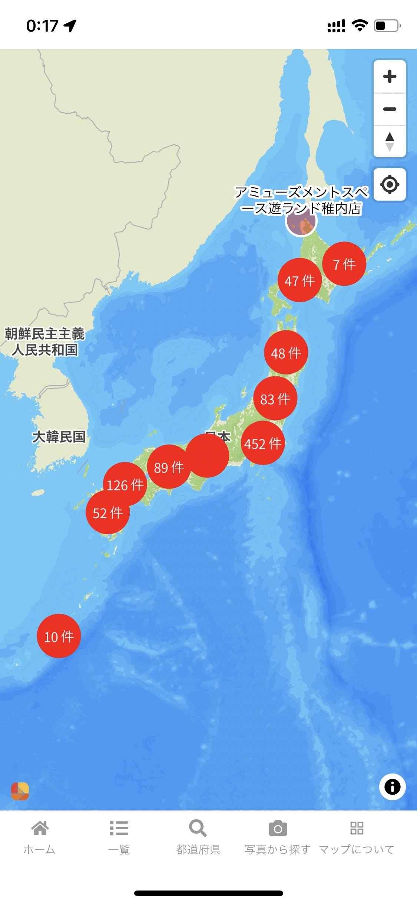
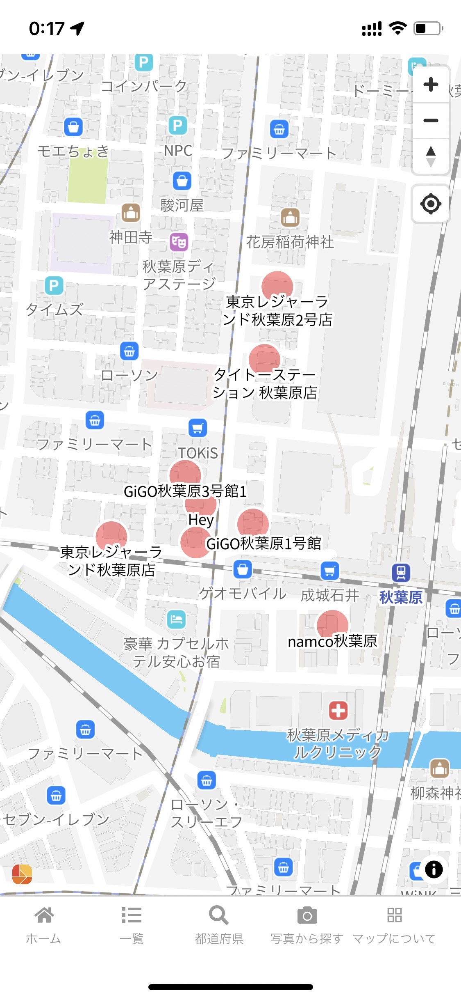

Profile
あさぶろ
SEGA 3機種を中心に、アキバと全国を行き来して遊んでいます。ウニ16.75、銀ポゼV、オンゲキ20,400奏星。行脚が終わると、また次の行脚が始まるタイプです。
Prime! / 行脚が終わると行脚が始まる
- マチポケオンゲキーズ王決定戦 ランイベ72位
- ユメステ第二弾 46位
- SEGA 3機種全国制覇（燦天下 / 全国制覇 / 全国制覇でらっくす）
- Base
- 東京 / アキバ
- Arcade
- SEGA 3機種
- 行脚
- CHUNITHM三周目完了
- Maps
- 7種類運用中
Arcade
機種別詳細

ONGEKI
オンゲキ
- レート
- 16.00くらい
- MAX レート
- 16.06
REDくらいから始めた。ある時期いきなり爆伸びしてレート16に来ました。そこからは伸びてませんｗ

maimai
maimai
ほぼやってない。
Maps
設置店舗見れるサイト
行脚にも使えるかもしれない設置店舗・店舗マップを7種類作ってます。毎日更新しているので常に最新情報です。
CHUNITHM
チュウニズム
ONGEKI
オンゲキ
maimai
maimai
GiGO
GiGO店舗
THE IDOLM@STER
アイドルマスターツアーズ
POLARIS CHORD
ポラリスコード
TAIKO
太鼓の達人

